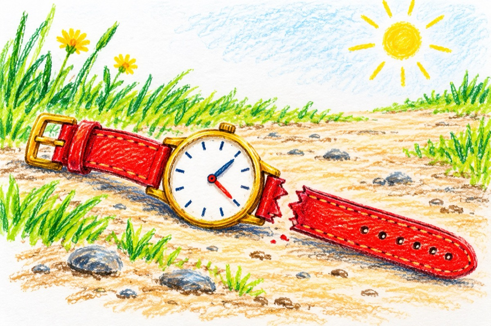

Mi s-a rupt cureaua la ceas
Mi s-a rupt cureaua la ceas.
Nu știu cât e timpul de când l-am pierdut.
Și unde mă aflu și unde-am rămas?
Să merg la serviciu sigur am vrut.
Mi s-a rupt cureaua la ceas.
Și ceasul cândva l-am pierdut.
Ce timp am avut, ce timp mi-a mai rămas,
Să merg la serviciu poate am vrut.
Mi s-a rupt cureaua la ceas,
De l-ați găsit eu l-am pierdut.
Aș vrea să știu unde mă aflu, unde-am rămas,
Poate-aș dori să ajung la serviciu, dar uite n-am ceas.
Mi-am luat cureaua la ceas,
Și ceasul pierdut l-am găsit
Să merg la serviciu acum mi-a rămas
Dar unde să merg, serviciu-i pierdut!?
Vasile Groza